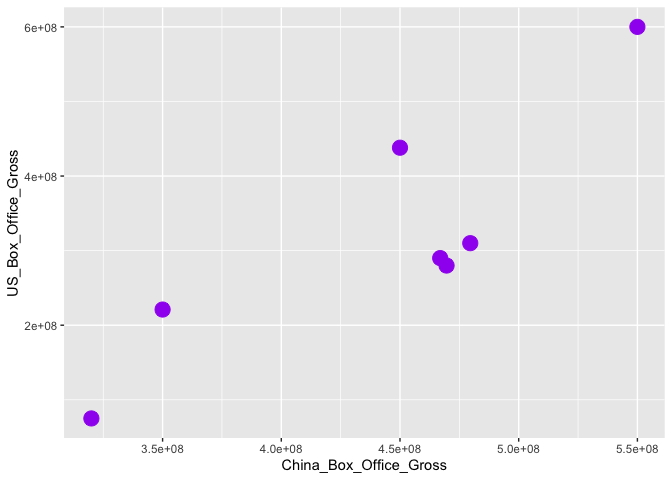
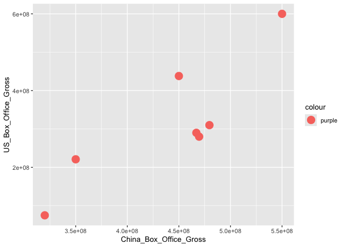
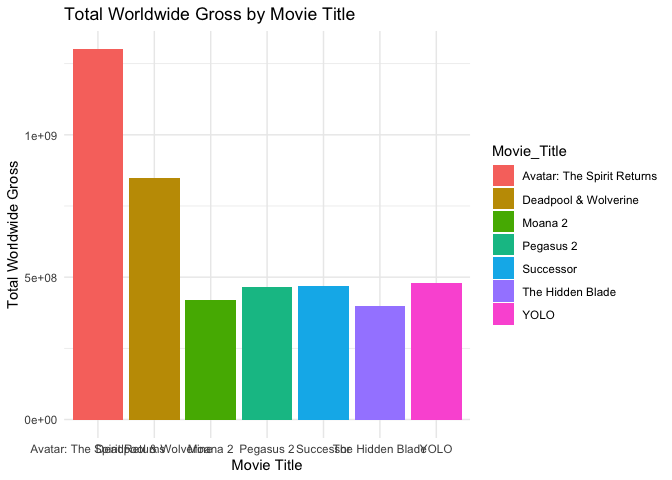

Big Data: Data Collection and Wrangling
Dr. Ayse D. Lokmanoglu Lecture 2, (B) Jan 29, (A) Feb 2
Lecture 2 Table of Contents
| Section | Topic |
|---|---|
| 1 | Create Data Frames |
| 1.1 | Loading from CSV, Excel, or TXT |
| 1.2 | Loading via RStudio Files Pane |
| 2 | Tidy Data |
| 2.1 | Tidying Data with tidyr & Pipe Operator |
| 3 | DPLYR |
| 3.1 | Common dplyr Functions Overview |
| 3.2 | filter() |
| 3.3 | select() |
| 3.4 | mutate() |
| 3.5 | summarize() |
| 3.6 | group_by() |
| 3.7 | arrange() |
| 3.8 | rename() |
| 4 | Data Reshaping |
| 4.1 | pivot_longer() |
| 4.2 | pivot_wider() |
| 4.3 | separate() |
| 4.4 | unite() |
| 5 | Joins in Tidyverse |
| 5.1 | left_join() |
| 5.2 | right_join() |
| 5.3 | anti_join() |
| 6 | GGPlot |
| 6.1 | Introduction to ggplot2 |
| 6.2 | Geoms Overview |
| 6.3 | Mapping vs. Setting Aesthetics |
| 6.4 | Creating a Basic Scatter Plot |
| 6.5 | Customizing Visualizations (Aesthetics) |
| 6.6 | Bar Charts |
| 6.7 | Adjusting Labels with labs() |
| 6.8 | Customizing Axes |
| 6.9 | Scale Syntax & Formatting |
| 6.10 | Customizing Y-Axis Labels |
| 6.11 | Customizing Axis Breaks |
| 6.12 | Customizing X-Axis |
| 6.13 | Adjusting Date Scales |
1. Create Data Frames
- We can create our own or use ones already in tidy (e.g.,
mtcars,iris)
df <- data.frame(
Movie_Title = c(
"YOLO", "Successor", "Pegasus 2", "Deadpool & Wolverine", "Moana 2",
"The Hidden Blade", "Avatar: The Spirit Returns"
),
Release_Date = c(
"January 2024", "February 2024", "March 2024", "July 2024",
"November 2024", "April 2024", "December 2024"
),
China_Box_Office_Gross = c(
479597304, 469612890, 466930272, 450000000, 350000000, 320000000, 550000000
),
US_Box_Office_Gross = c(
310000000, 280000000, 290000000, 438000000, 221000000, 75000000, 600000000
),
Total_Worldwide_Gross = c(
479597304, 469612890, 466930272, 850000000, 421000000, 400000000, 1300000000
)
)
# Print the dataframe
head(df)## Movie_Title Release_Date China_Box_Office_Gross US_Box_Office_Gross
## 1 YOLO January 2024 479597304 3.10e+08
## 2 Successor February 2024 469612890 2.80e+08
## 3 Pegasus 2 March 2024 466930272 2.90e+08
## 4 Deadpool & Wolverine July 2024 450000000 4.38e+08
## 5 Moana 2 November 2024 350000000 2.21e+08
## 6 The Hidden Blade April 2024 320000000 7.50e+07
## Total_Worldwide_Gross
## 1 479597304
## 2 469612890
## 3 466930272
## 4 850000000
## 5 421000000
## 6 400000000# Load a built-in dataset
data("mtcars")
head(mtcars)## mpg cyl disp hp drat wt qsec vs am gear carb
## Mazda RX4 21.0 6 160 110 3.90 2.620 16.46 0 1 4 4
## Mazda RX4 Wag 21.0 6 160 110 3.90 2.875 17.02 0 1 4 4
## Datsun 710 22.8 4 108 93 3.85 2.320 18.61 1 1 4 1
## Hornet 4 Drive 21.4 6 258 110 3.08 3.215 19.44 1 0 3 1
## Hornet Sportabout 18.7 8 360 175 3.15 3.440 17.02 0 0 3 2
## Valiant 18.1 6 225 105 2.76 3.460 20.22 1 0 3 1Hint: To find built-in datasets
data()1.1 We can load from csv, excel or txt
Using URL
library(readr)
# Load the data from the URL
url <- "https://raw.githubusercontent.com/aysedeniz09/Social_Media_Listening/refs/heads/main/MSC_social_media_list_data/Starbucks_User_Data.csv"
starbucks_user_data <- read_csv(url)
head(starbucks_user_data)## # A tibble: 6 × 16
## author_id conversation_id created_at hashtag lang like_count mention
## <dbl> <dbl> <dttm> <chr> <chr> <dbl> <chr>
## 1 30973 1.61e18 2022-12-27 15:43:16 <NA> en 10 <NA>
## 2 30973 1.60e18 2022-11-29 05:23:55 <NA> en 9 Mo_sha…
## 3 30973 1.59e18 2022-11-28 20:14:09 <NA> en 2 Mixxed…
## 4 30973 1.60e18 2022-11-28 12:51:28 <NA> en 0 BihhKa…
## 5 30973 1.60e18 2022-11-27 15:14:26 <NA> en 0 BihhKa…
## 6 30973 1.60e18 2022-11-24 17:47:24 <NA> en 1 therea…
## # ℹ 9 more variables: quote_count <dbl>, referenced_status_id <dbl>,
## # referenced_user_id <dbl>, reply_count <dbl>, retweet_count <dbl>,
## # row_id <dbl>, status_id <dbl>, text <chr>, type <chr>From your computer
starbucks_user_data <- read_csv("data/Starbucks_User_Data.csv")
head(starbucks_user_data)1.2 You can also load it from your computer using R Studio Files


2. Tidy Data
Tidy data ensures consistency by following these principles:
Each variable is a column.
Each observation is a row.
Each type of observational unit forms a table.
Why Tidy Data?
Simplifies data manipulation and visualization.
Facilitates integration with R packages like dplyr and ggplot2.

image from: Hassan, F. (2023, March 21). Tidy Data in Python. Medium. https://blog.devgenius.io/tidy-data-in-python-1f20db66f427
2.1 Tidying Data with tidyr
The pipe operator |>
N.b. old version of the pipe is %>%
Instead of nesting multiple functions, you can write the code in a sequence that mirrors the flow of data. Shortcut:
Mac: - Windows:
3. DPLYR
What is dplyr?
- A part of the
tidyversepackage,dplyrprovides a powerful toolkit for data manipulation. - Designed for efficiency, readability, and compatibility with tidy data.
- Key Features:
- Works seamlessly with the pipe operator (|> or %>%).
- Offers simple and intuitive verbs for common data manipulation tasks
library(tidyverse)
library(dplyr)3.1 Common dplyr functions
| Function | Description |
|---|---|
filter() |
Select rows based on conditions |
select() |
Choose specific columns |
mutate() |
Create or transform columns |
summarize() |
Compute summary statistics for data |
group_by() |
Group data by one or more variables for grouped summaries |
arrange() |
Sort rows by one or more variables |
rename() |
Rename columns in the dataset |
3.2 filter()
- Select rows based on specific conditions.
- Useful for subsetting your dataset.
df2 = df |>
dplyr::filter(China_Box_Office_Gross > 400000000)
mtcars |>
dplyr::filter(mpg > 20 & cyl == 6 | hp >110) |>
dplyr::select(hp, vs)## hp vs
## Mazda RX4 110 0
## Mazda RX4 Wag 110 0
## Hornet 4 Drive 110 1
## Hornet Sportabout 175 0
## Duster 360 245 0
## Merc 280 123 1
## Merc 280C 123 1
## Merc 450SE 180 0
## Merc 450SL 180 0
## Merc 450SLC 180 0
## Cadillac Fleetwood 205 0
## Lincoln Continental 215 0
## Chrysler Imperial 230 0
## Dodge Challenger 150 0
## AMC Javelin 150 0
## Camaro Z28 245 0
## Pontiac Firebird 175 0
## Lotus Europa 113 1
## Ford Pantera L 264 0
## Ferrari Dino 175 0
## Maserati Bora 335 03.3 select()
- Choose specific columns from a dataset.
- Useful for reducing the number of columns for analysis.
df |>
dplyr::select(Movie_Title, Total_Worldwide_Gross)## Movie_Title Total_Worldwide_Gross
## 1 YOLO 479597304
## 2 Successor 469612890
## 3 Pegasus 2 466930272
## 4 Deadpool & Wolverine 850000000
## 5 Moana 2 421000000
## 6 The Hidden Blade 400000000
## 7 Avatar: The Spirit Returns 13000000003.4 mutate()
- Create or transform columns.
- Add calculated columns to your dataset.
df = df |>
mutate(Profit = Total_Worldwide_Gross - US_Box_Office_Gross)
df3 <- df |>
mutate(Profit = Total_Worldwide_Gross - US_Box_Office_Gross) |>
dplyr::filter(Profit > 5000000) |>
dplyr::select(Movie_Title, Profit)
mtcars = mtcars |>
mutate(mycolumn = gear + carb)3.5 summarize()
- Compute summary statistics for your data.
- Often used with
group_by()for grouped summaries.
df2 <- df |>
summarize(Total = sum(China_Box_Office_Gross))
mtcars2 = mtcars |>
summarize(mean_mpg = mean(mpg))3.6 group_by()
- Group data by one or more variables for grouped operations.
- Commonly used before applying functions like
summarize(),mutate().
df |>
group_by(Movie_Title) |>
summarize(Total = sum(Total_Worldwide_Gross))## # A tibble: 7 × 2
## Movie_Title Total
## <chr> <dbl>
## 1 Avatar: The Spirit Returns 1300000000
## 2 Deadpool & Wolverine 850000000
## 3 Moana 2 421000000
## 4 Pegasus 2 466930272
## 5 Successor 469612890
## 6 The Hidden Blade 400000000
## 7 YOLO 479597304mt_cars3 =
mtcars |>
group_by(cyl) |>
summarize(mean_mpg = mean(mpg))
mt_cars4 = mtcars |>
group_by(hp) |>
summarize(median_cyl = median(cyl))
mt_cars5 = mtcars |>
group_by(drat) |>
summarize(sum_vs = sum(vs))
mt_cars6 = mtcars |>
group_by(cyl) |>
summarise(freq = n())3.7 arrange()
- Sort rows by one or more variables.
- Can be used to order data in ascending or descending order.
df |>
arrange(desc(Total_Worldwide_Gross))## Movie_Title Release_Date China_Box_Office_Gross
## 1 Avatar: The Spirit Returns December 2024 550000000
## 2 Deadpool & Wolverine July 2024 450000000
## 3 YOLO January 2024 479597304
## 4 Successor February 2024 469612890
## 5 Pegasus 2 March 2024 466930272
## 6 Moana 2 November 2024 350000000
## 7 The Hidden Blade April 2024 320000000
## US_Box_Office_Gross Total_Worldwide_Gross Profit
## 1 6.00e+08 1300000000 700000000
## 2 4.38e+08 850000000 412000000
## 3 3.10e+08 479597304 169597304
## 4 2.80e+08 469612890 189612890
## 5 2.90e+08 466930272 176930272
## 6 2.21e+08 421000000 200000000
## 7 7.50e+07 400000000 3250000003.8 rename()
- Rename columns in a dataset.
rename(new_name = old_name)
df_renamed <- df |>
rename(
China_Gross = China_Box_Office_Gross,
US_happy = US_Box_Office_Gross,
Worldwide_sad = Total_Worldwide_Gross
)
# Print the updated dataframe
print(df_renamed)## Movie_Title Release_Date China_Gross US_happy Worldwide_sad
## 1 YOLO January 2024 479597304 3.10e+08 479597304
## 2 Successor February 2024 469612890 2.80e+08 469612890
## 3 Pegasus 2 March 2024 466930272 2.90e+08 466930272
## 4 Deadpool & Wolverine July 2024 450000000 4.38e+08 850000000
## 5 Moana 2 November 2024 350000000 2.21e+08 421000000
## 6 The Hidden Blade April 2024 320000000 7.50e+07 400000000
## 7 Avatar: The Spirit Returns December 2024 550000000 6.00e+08 1300000000
## Profit
## 1 169597304
## 2 189612890
## 3 176930272
## 4 412000000
## 5 200000000
## 6 325000000
## 7 700000000Class Exercise:
Use the movies dataset and perform the following:
filter(): Select movies with a total worldwide gross greater than $500M.summarize(): Compute the total gross for both China and the U.S.mutate(): Add a new column for the profit (worldwide gross - U.S. gross).- Use
group_by()andsummarize()to calculate the average gross per country. - Use
rename()to rename columns
4. Data Reshaping


4.1 Pivot Longer
pivot_longer()transforms data from wide format to long format. In wide format, variables are spread across multiple columns, while in long format, they are stacked into two key columns: one for variable names and one for their corresponding values.- When to Use:
- When you have many columns representing variables (e.g., scores, metrics) that you want to consolidate into fewer columns.
- Ideal for tidying datasets to meet the principles of tidy data.
- Key Arguments:
cols: Columns to pivot into rows.names_to: Name of the new column that will hold the original column names.values_to: Name of the new column that will hold the data values.
Convert our movie dataframe to long
# Convert to long format
long_df <- df |>
pivot_longer(
cols = China_Box_Office_Gross:Total_Worldwide_Gross,
names_to = "Box_Office_Type",
values_to = "Gross"
)
print(long_df)## # A tibble: 21 × 5
## Movie_Title Release_Date Profit Box_Office_Type Gross
## <chr> <chr> <dbl> <chr> <dbl>
## 1 YOLO January 2024 169597304 China_Box_Office_Gross 479597304
## 2 YOLO January 2024 169597304 US_Box_Office_Gross 310000000
## 3 YOLO January 2024 169597304 Total_Worldwide_Gross 479597304
## 4 Successor February 2024 189612890 China_Box_Office_Gross 469612890
## 5 Successor February 2024 189612890 US_Box_Office_Gross 280000000
## 6 Successor February 2024 189612890 Total_Worldwide_Gross 469612890
## 7 Pegasus 2 March 2024 176930272 China_Box_Office_Gross 466930272
## 8 Pegasus 2 March 2024 176930272 US_Box_Office_Gross 290000000
## 9 Pegasus 2 March 2024 176930272 Total_Worldwide_Gross 466930272
## 10 Deadpool & Wolverine July 2024 412000000 China_Box_Office_Gross 450000000
## # ℹ 11 more rowsmtcars_long = mtcars |>
pivot_longer(
cols = am:carb,
names_to = "Power",
values_to = "Value"
)4.2 Pivot wider
pivot_wider()is the reverse ofpivot_longer(). It transforms data from long format to wide format by spreading values across multiple columns.- When to Use:
- When data is in long format and you need a more compact or spreadsheet-like representation.
- Useful for presenting summary tables or reshaping data for analysis.
- Key Arguments:
names_from: Column whose unique values will become new column names.values_from: Column whose values will populate the new columns.
Let’s change the long df to wide df again
# Convert back to wide format
wide_df <- long_df |>
pivot_wider(
names_from = Box_Office_Type,
values_from = Gross
)
print(wide_df)## # A tibble: 7 × 6
## Movie_Title Release_Date Profit China_Box_Office_Gross US_Box_Office_Gross
## <chr> <chr> <dbl> <dbl> <dbl>
## 1 YOLO January 2024 1.70e8 479597304 310000000
## 2 Successor February 20… 1.90e8 469612890 280000000
## 3 Pegasus 2 March 2024 1.77e8 466930272 290000000
## 4 Deadpool & Wol… July 2024 4.12e8 450000000 438000000
## 5 Moana 2 November 20… 2 e8 350000000 221000000
## 6 The Hidden Bla… April 2024 3.25e8 320000000 75000000
## 7 Avatar: The Sp… December 20… 7 e8 550000000 600000000
## # ℹ 1 more variable: Total_Worldwide_Gross <dbl>mtcars_wide <- mtcars_long |>
pivot_wider(
names_from = Power,
values_from = Value
)Differences between pivot longer and wider
| Feature | pivot_longer() |
pivot_wider() |
|---|---|---|
| Direction | Wide → Long | Long → Wide |
| Purpose | Condense multiple columns into fewer columns. | Spread values across new columns. |
| Key Arguments | cols, names_to, values_to |
names_from, values_from |
| Typical Use Case | Tidying data for analysis. | Summarizing or reshaping for presentation. |
4.3 separate()
- Splits the contents of a single column into multiple columns.
- Useful when a column contains combined values (e.g., “Month Year”).
TRY: Separate Release_Date into Month and Year
# Separate Release_Date into Month and Year
df_separated <- df |>
separate(Release_Date, into = c("Month", "Year"), sep = " ")
# Print the updated dataframe
print(df_separated)## Movie_Title Month Year China_Box_Office_Gross
## 1 YOLO January 2024 479597304
## 2 Successor February 2024 469612890
## 3 Pegasus 2 March 2024 466930272
## 4 Deadpool & Wolverine July 2024 450000000
## 5 Moana 2 November 2024 350000000
## 6 The Hidden Blade April 2024 320000000
## 7 Avatar: The Spirit Returns December 2024 550000000
## US_Box_Office_Gross Total_Worldwide_Gross Profit
## 1 3.10e+08 479597304 169597304
## 2 2.80e+08 469612890 189612890
## 3 2.90e+08 466930272 176930272
## 4 4.38e+08 850000000 412000000
## 5 2.21e+08 421000000 200000000
## 6 7.50e+07 400000000 325000000
## 7 6.00e+08 1300000000 7000000004.4 unite()
- Combines multiple columns into a single column.
- Useful when you need to merge information for simplicity.
Class Exercise
Use the movies df to separate the date
# Combine Month and Year into Release_Date again
df_united <- df_separated |>
unite("Release_Date", Month, Year, sep = " ")
# Print the updated dataframe
print(df_united)## Movie_Title Release_Date China_Box_Office_Gross
## 1 YOLO January 2024 479597304
## 2 Successor February 2024 469612890
## 3 Pegasus 2 March 2024 466930272
## 4 Deadpool & Wolverine July 2024 450000000
## 5 Moana 2 November 2024 350000000
## 6 The Hidden Blade April 2024 320000000
## 7 Avatar: The Spirit Returns December 2024 550000000
## US_Box_Office_Gross Total_Worldwide_Gross Profit
## 1 3.10e+08 479597304 169597304
## 2 2.80e+08 469612890 189612890
## 3 2.90e+08 466930272 176930272
## 4 4.38e+08 850000000 412000000
## 5 2.21e+08 421000000 200000000
## 6 7.50e+07 400000000 325000000
## 7 6.00e+08 1300000000 7000000005. Joins in Tidyverse
Joins combine two datasets based on a common key (column).
Merging additional data into an existing dataset.
Identifying differences or commonalities between datasets.
| Join Type | Description |
|---|---|
left_join() |
Keeps all rows from the left dataset, adding matching rows from the right. |
right_join() |
Keeps all rows from the right dataset, adding matching rows from the left. |
inner_join() |
Keeps only rows that have matches in both datasets. |
full_join() |
Keeps all rows from both datasets, filling missing values with NA. |
anti_join() |
Returns rows from the left dataset that do not match in the right. |

5.1 left_join()
Create a new dataset
# Additional dataset with Directors
df_directors <- tibble(
Movie_Title = c("YOLO", "Successor", "Deadpool & Wolverine", "Moana 2"),
Director = c("John Doe", "Jane Smith", "Ryan Coogler", "Ron Clements")
)Let’s left_join() with our dataset
# Join the directors' dataset to the main dataset
df_left <- left_join(df, df_directors, by = "Movie_Title")
# Preview the result
print(df_left)## Movie_Title Release_Date China_Box_Office_Gross
## 1 YOLO January 2024 479597304
## 2 Successor February 2024 469612890
## 3 Pegasus 2 March 2024 466930272
## 4 Deadpool & Wolverine July 2024 450000000
## 5 Moana 2 November 2024 350000000
## 6 The Hidden Blade April 2024 320000000
## 7 Avatar: The Spirit Returns December 2024 550000000
## US_Box_Office_Gross Total_Worldwide_Gross Profit Director
## 1 3.10e+08 479597304 169597304 John Doe
## 2 2.80e+08 469612890 189612890 Jane Smith
## 3 2.90e+08 466930272 176930272 <NA>
## 4 4.38e+08 850000000 412000000 Ryan Coogler
## 5 2.21e+08 421000000 200000000 Ron Clements
## 6 7.50e+07 400000000 325000000 <NA>
## 7 6.00e+08 1300000000 700000000 <NA>5.2 right_join()
Do the same but now right_join() so what we want to join will be on the right
# Join the main dataset to the directors' dataset
df_right <-
right_join(df, df_directors, by = "Movie_Title")
# Preview the result
print(df_right)## Movie_Title Release_Date China_Box_Office_Gross US_Box_Office_Gross
## 1 YOLO January 2024 479597304 3.10e+08
## 2 Successor February 2024 469612890 2.80e+08
## 3 Deadpool & Wolverine July 2024 450000000 4.38e+08
## 4 Moana 2 November 2024 350000000 2.21e+08
## Total_Worldwide_Gross Profit Director
## 1 479597304 169597304 John Doe
## 2 469612890 189612890 Jane Smith
## 3 850000000 412000000 Ryan Coogler
## 4 421000000 200000000 Ron Clementsdf_left <- left_join(df_directors, df, by = "Movie_Title")5.3 anti_join()
Now we remove or anti_join()
# Find movies in the main dataset without directors
df_anti <- df |>
anti_join(df_directors, by = "Movie_Title")
# Preview the result
print(df_anti)## Movie_Title Release_Date China_Box_Office_Gross
## 1 Pegasus 2 March 2024 466930272
## 2 The Hidden Blade April 2024 320000000
## 3 Avatar: The Spirit Returns December 2024 550000000
## US_Box_Office_Gross Total_Worldwide_Gross Profit
## 1 2.9e+08 466930272 176930272
## 2 7.5e+07 400000000 325000000
## 3 6.0e+08 1300000000 700000000Class Exercise
Use the provided datasets (df and df_directors). Perform the following joins:
left_join(): Merge the directors into the main dataset.right_join(): Merge the main dataset into the directors’ dataset.anti_join(): Identify movies without directors.
6. Ggplot
6.1 ggplot2()
- A part of the
tidyverse,ggplot2is a powerful tool for creating complex and elegant visualizations. - Follows the Grammar of Graphics:
- Data: The input dataset.
- Aesthetics: Mappings between variables and visual properties (e.g., x, y, color).
- Geometries: The type of plot (e.g., points, bars, lines).
Load the package
library(ggplot2)6.2 Geoms: the type of graph
| Geom Function | Description | Key aes() Arguments |
|---|---|---|
geom_blank() |
Ensures that limits include values across all plots. | None |
geom_curve() |
Draw a curved line from (x, y) to (xend, yend). |
x, xend, y, yend, curvature, color, size |
geom_path() |
Connect observations in the order they appear. | x, y, alpha, color, group, linetype, size |
geom_polygon() |
Connect points into polygons. | x, y, alpha, color, fill, group, subgroup, linetype, size |
geom_rect() |
Draw rectangles by connecting four corners (xmin, xmax, ymin, ymax). |
xmin, xmax, ymin, ymax, alpha, color, fill, size |
geom_ribbon() |
Plot intervals for each x from ymin to ymax. |
x, ymin, ymax, alpha, color, fill, group, linetype, size |
geom_abline() |
Draw a diagonal reference line with a given slope and intercept. | intercept, slope, color, size, linetype |
geom_hline() |
Draw a horizontal reference line with a given yintercept. |
yintercept, color, size, linetype |
geom_vline() |
Draw a vertical reference line with a given xintercept. |
xintercept, color, size, linetype |
geom_segment() |
Draw a straight line from (x, y) to (xend, yend). |
x, xend, y, yend, alpha, color, linetype, size |
geom_spoke() |
Draw line segments using polar coordinates (angle and radius). |
x, y, angle, radius, color, size |
6.3 Mapping vs. Setting Aesthetics
A common mistake! There’s an important difference between mapping a variable to an aesthetic and setting an aesthetic to a fixed value.
Mapping (inside aes()) - connects a variable to a visual property:
# Color varies BY the data (each movie gets a different color)
ggplot(data = df, aes(x = China_Box_Office_Gross,
y = US_Box_Office_Gross,
color = Movie_Title)) +
geom_point(size = 5)
Setting (outside aes()) - applies a fixed value to all points:
# ALL points are purple
ggplot(data = df, aes(x = China_Box_Office_Gross,
y = US_Box_Office_Gross)) +
geom_point(size = 5, color = "purple")
Common Error: What happens if you put a fixed value inside aes()?
# WRONG! This creates a weird legend
ggplot(data = df, aes(x = China_Box_Office_Gross,
y = US_Box_Office_Gross,
color = "purple")) +
geom_point(size = 5)
R thinks “purple” is a variable name, recycles it for every row, and picks its default color (red) — not what you wanted!
6.4 Creating a Basic ggplot
TRY: Scatter Plot
# Create a scatter plot of China vs US Box Office Gross
ggplot(data = df,
aes(x = China_Box_Office_Gross, y = US_Box_Office_Gross)) +
geom_point() +
labs(
title = "China vs US Box Office Gross",
x = "China Box Office Gross",
y = "US Box Office Gross"
) +
theme_minimal()
6.5 Customizing Visualizations
- Adding Aesthetic Mappings
- Use
aes()to map data to visual properties like color, size, and shape.
- Use
| Aesthetic | Description | Example Values |
|---|---|---|
color |
Color of points, lines, or text | "red", "#RRGGBB", "blue" |
fill |
Fill color for shapes (e.g., bars, areas) | "green", "yellow", "#FF5733" |
linetype |
Style of lines | "solid", "dashed", "dotted" |
size |
Size of points or text (in mm) | 2, 4, 6 |
linewidth |
Thickness of lines (in mm) | 1, 2, 3 |
shape |
Shape of points (integer, shape name, or character) | 16 = "circle", 17 = "triangle" |
Point Shapes (Integer or Name):
- Integers represent specific shapes, e.g.,
shape = 16produces a circle.
| Shape Integer | Shape Name | Shape Visualization |
|---|---|---|
| 0 | "square open" |
□ |
| 1 | "circle open" |
○ |
| 2 | "triangle open" |
△ |
| 3 | "plus" |
+ |
| 4 | "cross" |
✕ |
| 5 | "diamond open" |
◇ |
| 6 | "triangle down open" |
▽ |
| 15 | "square" |
■ |
| 16 | "circle" |
● |
| 17 | "triangle" |
▲ |
| 18 | "diamond" |
◆ |
# Add color mapping based on Total Worldwide Gross
ggplot(data = df, aes(x = China_Box_Office_Gross,
y = US_Box_Office_Gross,
color = Total_Worldwide_Gross)) +
geom_point(size = 10,
shape = 18) +
labs(
title = "China vs US Box Office with Worldwide Gross",
x = "China Box Office Gross",
y = "US Box Office Gross",
color = "Worldwide Gross"
) +
theme_minimal()
TRY: Change the shapes and colors
6.6 Bar Charts
# Create a bar chart of Total Worldwide Gross by Movie Title
ggplot(data = df, aes(y = Total_Worldwide_Gross, x = Movie_Title, fill = Movie_Title)) +
geom_bar(stat = "identity") +
labs(
title = "Total Worldwide Gross by Movie Title",
x = "Movie Title",
y = "Total Worldwide Gross"
) +
theme_minimal()
TRY: Change the colors
TRY: Flip the y and x axis
# Create a bar chart of Total Worldwide Gross by Movie Title
ggplot(data = df, aes(x = Movie_Title, y = Total_Worldwide_Gross)) +
geom_bar(stat = "identity", fill = "steelblue") +
coord_flip() +
labs(
title = "Total Worldwide Gross by Movie Title",
x = "Movie Title",
y = "Total Worldwide Gross"
) +
theme_minimal()
Class Exercise
- Create a scatter plot showing the relationship between
hp(horsepower) andmpg(miles per gallon). - Modify the scatter plot by:
- Changing point size based on
wt(weight). - Coloring points based on
cyl(number of cylinders). - Adjusting transparency (alpha) for better visibility.
- Changing point size based on
- Create a bar chart showing how many cars belong to each
cyl(number of cylinders) category. - Customize the chart by:
- Changing the bar fill color.
- Adding axis labels and a title.
- Flipping the coordinates (
coord_flip()) to make the bars horizontal.
- Create a line plot showing the trend of mpg (miles per gallon) as wt (weight) increases.
- Modify the line plot by:
- Changing the line color based on the number of cylinders (
cyl). - Adjusting line thickness for better visibility.
- Changing the line color based on the number of cylinders (
6.7 Adjusting Labels with labs()
Use labs() to set plot labels:
title: Main title of the plot.subtitle: Secondary description.caption: Notes or source information.x and y: Axis labels.color,fill,size: Legend titles.
6.8 Customizing Axis
- Default axes in
ggplot2are often sufficient but might need adjustment for:- Readability e.g., showing full numbers instead of scientific notation.
- Specific analysis needs e.g., custom breaks or labels.
- Improved presentation e.g., date formats.
6.9 Scale Syntax & Formatting
scale_y_continuous() & scale_x_continuous()
- Functions used to customize the y-axis (
scale_y_continuous()) and x-axis (scale_x_continuous()). - These functions are part of the
scalespackage, which is included withggplot2.
install.packages("scales")N.B. if you are using a package only once or twice in the script rather than loading the package, you can just use it for the specific function by ::. So in this case, since I will only use scales for one instance, I will not load the package but will tell R to go to the package just for the function comma(), by scales::comma().
What Can Scales Package Do?
Set Breaks: Specify where the axis labels appear using breaks.
- E.g., Show labels at every $100 million.
Format Labels:
Use functions like
scales::comma()to display full numbers or add custom formatting.E.g., Convert scientific notation (e.g., 1e+06) into 1,000,000.
Limits: - Specify the range of the axis using limits.
- E.g., Limit the y-axis to values between $200 million and $1 billion.
Other Customizations:
Adjust scales for log-transformed data (
scale_y_log10()).Handle reversed axes using
scale_y_reverse().
scale_y_continuous(
breaks = c(...), # Define custom breaks
labels = c(...), # Define custom labels or use functions like scales::comma()
limits = c(min, max) # Set minimum and maximum axis limits
)
scale_x_continuous(
breaks = c(...), # Same as y-axis but for x-axis
labels = c(...), # Same as y-axis but for x-axis
limits = c(min, max) # Same as y-axis but for x-axis
)6.10 Customizing Y-Axis Labels
- By default, ggplot abbreviates large numbers (e.g., 1e+06 for millions). Use
comma()fromscalespackage to display full numbers.
# Example: Bar chart with full numbers on y-axis
ggplot(data = df, aes(x = Movie_Title, y = Total_Worldwide_Gross)) +
geom_bar(stat = "identity", fill = "steelblue") +
scale_y_continuous(labels = scales::comma) + ### I added scales:: before the comma
labs(
title = "Total Worldwide Gross by Movie Title",
x = "Movie Title",
y = "Total Worldwide Gross"
) +
theme_minimal()
6.11 Customizing Axis Breaks
Use scale_y_continuous(breaks = c(...)) to manually set axis breaks.
library(scales) # this time I used library to load it
# Example: Custom y-axis breaks
ggplot(data = df, aes(x = Movie_Title, y = Total_Worldwide_Gross)) +
geom_bar(stat = "identity", fill = "steelblue") +
scale_y_continuous(
breaks = seq(0, 1500000000, by = 100000000),
labels = scales::comma # so kept the function as it is
) +
labs(
title = "Total Worldwide Gross by Movie Title",
x = "Movie Title",
y = "Total Worldwide Gross"
) +
theme_minimal()
6.12 Customizing the X-Axis
Adjust X-Axis for Continuous Variables
Use scale_x_continuous() to control breaks and labels for numerical x-axes.
# Example: Scatter plot with custom x-axis breaks
ggplot(data = df, aes(x = China_Box_Office_Gross, y = US_Box_Office_Gross)) +
geom_point(size = 4, color = "steelblue") +
scale_x_continuous(
limits = c(0, 600000000),
breaks = seq(0, 600000000, by = 50000000),
labels = scales::comma
) +
labs(
title = "China vs US Box Office Gross",
x = "China Box Office Gross",
y = "US Box Office Gross"
) +
theme_minimal()
6.14 Adjusting Date Scales
Use scale_x_date() for Date Variables:
When working with date columns, scale_x_date() allows you to format axis labels and control breaks.
Notes:
For this we first need to change our Release Date to a date type object using package
lubridate. Install the packageinstall.packages("lubridate").Lubridateis a very useful package.Before we do it let’s learn these functions:
paste()function:The
paste0()function has space as its default separator and limits your opportunities in the output as well.e.g.,
paste(1,'two',3,'four',5,'six')## [1] "1 two 3 four 5 six"paste0()function:- The
paste0()function acts just likepastefunction but with a default separator.
- The
paste0(1,'two',3,'four',5,'six')## [1] "1two3four5six"- so, we need to add a seperator using the
collapseargument, and you need to make the values a vector
paste0(c(1, 'two', 3, 'four', 5, 'six'), collapse = " ")## [1] "1 two 3 four 5 six"- or,
paste0(c(1, 'two', 3, 'four', 5, 'six'), collapse = "_") ## [1] "1_two_3_four_5_six"1. First we need to create a date column and make it into a date using date-month-year function dmy().
However our data only has month and year
Let’s create a Day by adding 01 in front of it using
paste(), then converting to date.
# Example: Line chart with date scale
library(lubridate)
library(tidyverse)
# Add a new column with parsed dates
df_dates <- df |>
mutate(Release_Date_Parsed = dmy(paste("01", Release_Date)))
print(df_dates$Release_Date_Parsed)## [1] "2024-01-01" "2024-02-01" "2024-03-01" "2024-07-01" "2024-11-01"
## [6] "2024-04-01" "2024-12-01"2. Now let’s graph it!
ggplot(data = df_dates, aes(x = Release_Date_Parsed, y = Total_Worldwide_Gross)) +
geom_line(color = "steelblue", size = 1) +
scale_x_date(
date_breaks = "1 month",
date_labels = "%b"
) +
labs(
title = "Worldwide Gross Over Time (2024)",
x = "Release Date",
y = "Total Worldwide Gross"
) +
theme_minimal()
?scale_x_date()Class Exercises:
Modify a bar chart to:
Display y-axis values as full numbers (e.g., 1,000,000 instead of 1e+06).
Add custom y-axis breaks every $200 million.
Create a scatter plot:
Adjust x-axis breaks for China Box Office Gross.
Use
seq()to set breaks in $50 million increments.
Create a line chart:
Parse Release_Date as dates using
lubridate::dmy().Use
scale_x_date()to display one label per month.
Lecture 2 Cheat Sheet
| Topic | Key Points |
|---|---|
| Tidy Data Principles | Each variable is a column; Each observation is a row; Each type of observational unit forms a table. |
Pipe Operator (|> or %>%) |
Simplifies sequential data transformations; Shortcuts: Cmd + Shift + M (Mac), Ctrl + Shift + M (Windows). |
| DPLYR Functions | filter(): Select rows based on conditions; select(): Choose specific columns; mutate(): Add or transform columns; summarize(): Compute summary statistics; group_by(): Group data for grouped operations; arrange(): Sort rows by variables; rename(): Rename columns. |
| Data Reshaping | pivot_longer(): Wide → Long format; pivot_wider(): Long → Wide format. Arguments: cols, names_to, values_to (longer) / names_from, values_from (wider). |
| Column Operations | separate(): Split a column into multiple columns; unite(): Combine multiple columns into one. |
| Joins in Tidyverse | left_join(): Keeps all rows from the left dataset; right_join(): Keeps all rows from the right dataset; inner_join(): Rows with matches in both datasets; full_join(): Keeps all rows from both datasets; anti_join(): Rows from the left dataset not in the right. |
| GGPlot2 Basics | Data: Input dataset; Aesthetics: Mappings (e.g., x, y, color, size); Geometries: Plot types (e.g., geom_point(), geom_bar(), geom_line()). |
| GGPlot Customization | Use aes() for mappings (e.g., color, size, shape). Adjust axis labels with scale_y_continuous() or scale_x_continuous() (e.g., breaks, labels, limits). Format full numbers with scales::comma. Customize date axes with scale_x_date() after converting to date. |
| Lubridate Package | Parse dates with dmy(), mdy(), ymd(). Extract components: year(), month(), day(). Manipulate with today(), now(). |
| Regex Basics | Match patterns in text with stringr. Key patterns: . (any character), ^ (start), $ (end), * (zero or more), + (one or more), [] (set). |